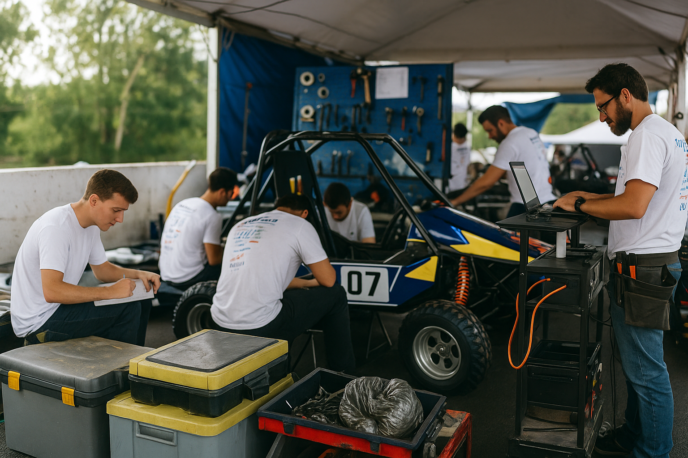

Galeria do Projeto
Imagens ilustrativas de protótipos e competições Baja SAE

Um projeto acadêmico simulado desenvolvido por estudantes de Análise e Desenvolvimento de Sistemas do UniCuritiba, explorando cálculos técnicos, design e usabilidade no contexto da competição Baja SAE.
Explorar FerramentasO Baja SAE é uma competição estudantil organizada pela SAE Brasil onde equipes universitárias projetam, constroem e competem com um protótipo de carro off-road. O projeto exige aplicação real de conhecimentos de engenharia, trabalho em equipe e inovação, passando por etapas como aceleração, frenagem, tração, e resistência.
Ferramentas de cálculo essenciais para análise de desempenho de veículos Baja SAE
Imagens ilustrativas de protótipos e competições Baja SAE
Este é um projeto acadêmico fictício desenvolvido por estudantes de Análise e Desenvolvimento de Sistemas do UniCuritiba como parte de um trabalho de disciplina. O objetivo principal é demonstrar conhecimentos em:
Importante: Este site não está vinculado a nenhuma equipe real de Baja SAE. É uma simulação prática criada exclusivamente para fins educacionais e avaliação acadêmica.
Quer saber mais sobre o Baja Hub, sugerir melhorias ou simplesmente mandar um alô? Fique à vontade para nos escrever abaixo.